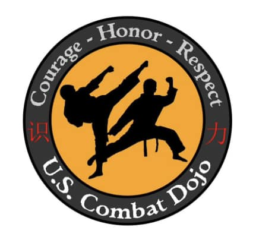

Welcome to the US Combat Dojo. We train in martial arts because it helps us with respect, self-control, discipline, confidence, and patience; it helps us improve our inner self, our pride, our concentration, and our relationship with other people. We do not train to fight, we train so we don't have to fight, but we will be ready if it happens. The difference between a fighter and a martial artist is that a fighter has to fight, it's what they train for. A martial artist trains for him or herself, and never stops training because they always aim for unreachable perfection. To be a real Martial Artist, you must treat your martial art style and your life with humility, respect and honor. We teach ITF Taekwondo and Kang Shi Do.
Taekwondo is a Korean form of martial arts involving punching and kicking techniques, with emphasis on head-height kicks, spinning jump kicks, and fast kicking techniques.
Kang shi do is a japanese martial arts that focuses on self defence and a little bit of kicks.